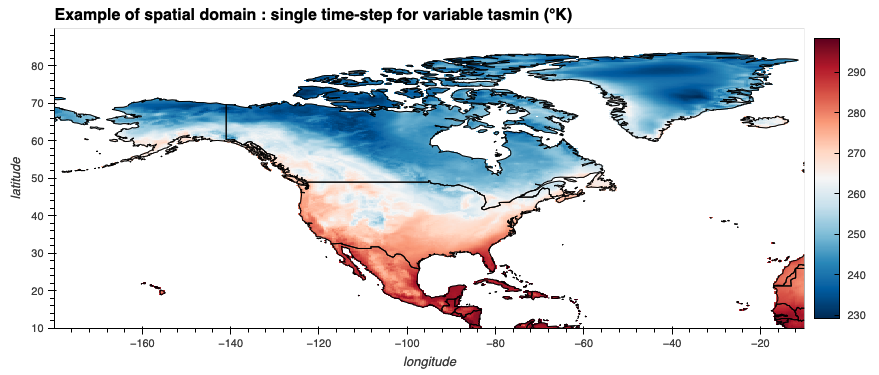

ERA5-Land is a high-resolution global land surface reanalysis dataset produced by the European Centre for Medium-Range Weather Forecasts (ECMWF). It provides detailed historical climate and weather data, focusing on land surface variables with enhanced spatial and temporal resolution compared to the standard ERA5 dataset. ERA5-Land is generated using the same land surface model as ERA5 but with higher resolution and no atmospheric data assimilation to improve consistency in land-related processes.
ToDo: Add referencec, data access

ERA5-Land data over North America (Source: PAVICS)
Dataset Characteristics
Current version: Based on ERA5 the dataset is operationally updated daily.
Temporal coverage: 1950 to present
Temporal resolution: Hourly and daily outputs
Spatial coverage: Global land area
Spatial resolution: ~9 km grid spacing (0.1˚)
Data type: ECMWF land surface model forced by ERA5 atmospheric conditions
To access ERA5-Land data hosted on PAVICS via a Python script, locate the the OpenDAP Data URL of the dataset by clicking on the Threads Catalog link. Using the Xarray Python Library the dataset can be easily read. The output from the following code allows to interactively browse the content of the dataset:
Code
import xarray as xr# the OpenDAP URL for hourly ERA5-Land dataurl ="https://pavics.ouranos.ca/twitcher/ows/proxy/thredds/dodsC/datasets/reanalyses/day_ERA5-Land_NAM.ncml"# open the datasetds = xr.open_dataset(url, chunks={'time': -1, 'lat': 50, 'lon': 50}, decode_timedelta=False)print("The ERA5-Land dataset:")ds
The ERA5-Land dataset:
<xarray.Dataset> Size: 715GB
Dimensions: (lat: 800, lon: 1700, time: 26298)
Coordinates:
* lat (lat) float32 3kB 10.0 10.1 10.2 10.3 10.4 ... 89.6 89.7 89.8 89.9
* lon (lon) float32 7kB -179.9 -179.8 -179.7 -179.6 ... -10.2 -10.1 -10.0
* time (time) datetime64[ns] 210kB 1950-01-01 1950-01-02 ... 2021-12-31
Data variables:
tas (time, lat, lon) float32 143GB dask.array<chunksize=(26298, 50, 50), meta=np.ndarray>
tasmin (time, lat, lon) float32 143GB dask.array<chunksize=(26298, 50, 50), meta=np.ndarray>
tasmax (time, lat, lon) float32 143GB dask.array<chunksize=(26298, 50, 50), meta=np.ndarray>
pr (time, lat, lon) float32 143GB dask.array<chunksize=(26298, 50, 50), meta=np.ndarray>
prsn (time, lat, lon) float32 143GB dask.array<chunksize=(26298, 50, 50), meta=np.ndarray>
Attributes: (12/26)
Conventions: CF-1.8
cell_methods: time: mean (interval: 1 day)
data_specs_version: 00.00.07
domain: NAM
format: netcdf
frequency: day
... ...
dataset_description: https://www.ecmwf.int/en/era5-land
license_type: permissive
license: Please acknowledge the use of ERA5-Land as stated i...
attribution: Contains modified Copernicus Climate Change Service...
citation: Muñoz Sabater, J., (2021): ERA5-Land hourly data fr...
doi: https://doi.org/10.24381/cds.e2161bac
[2022-07-16 11:22:42.650045] Converted from original data to zarr with modified metadata for CF-like compliance.
institution :
ECMWF
processing_level :
raw
project :
era5-land
realm :
atmos
source :
ERA5-Land
table_date :
13 June 2022
type :
reanalysis
version :
v2022.07.15
title :
ERA5-Land : daily
institute :
European Centre for Medium-Range Weather Forecasts
institute_id :
ECMWF
dataset_id :
ERA5-Land
abstract :
ERA5-Land provides hourly high resolution information of surface variables. The data is a replay of the land component of the ERA5 climate reanalysis with a finer spatial resolution: ~9km grid spacing. ERA5-Land includes information about uncertainties for all variables at reduced spatial and temporal resolutions. The model used in the production of ERA5-Land is the tiled ECMWF Scheme for Surface Exchanges over Land incorporating land surface hydrology (H-TESSEL).
dataset_description :
https://www.ecmwf.int/en/era5-land
license_type :
permissive
license :
Please acknowledge the use of ERA5-Land as stated in the Copernicus C3S/CAMS License agreement http://apps.ecmwf.int/datasets/licences/copernicus/
attribution :
Contains modified Copernicus Climate Change Service Information 2022. Neither the European Commission nor ECMWF is responsible for any use that may be made of the Copernicus Information or Data it contains.
citation :
Muñoz Sabater, J., (2021): ERA5-Land hourly data from 1950 to 1980. Copernicus Climate Change Service (C3S) Climate Data Store (CDS). (Accessed on 2022.06.07)
doi :
https://doi.org/10.24381/cds.e2161bac
A quicklook visualization of the data is shown below.